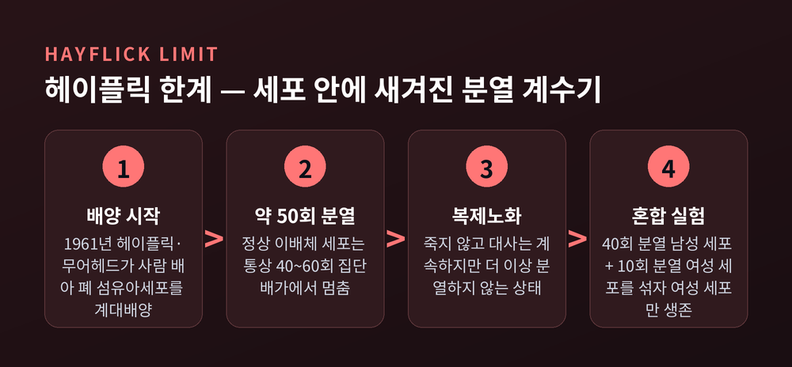
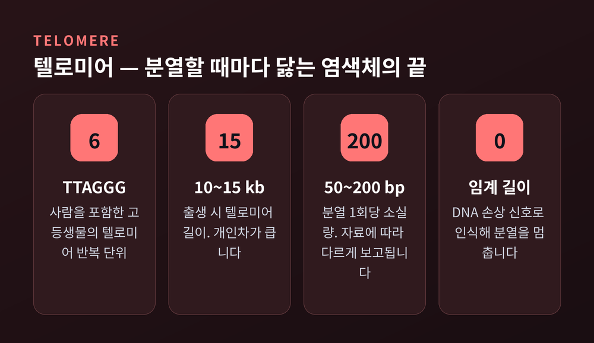
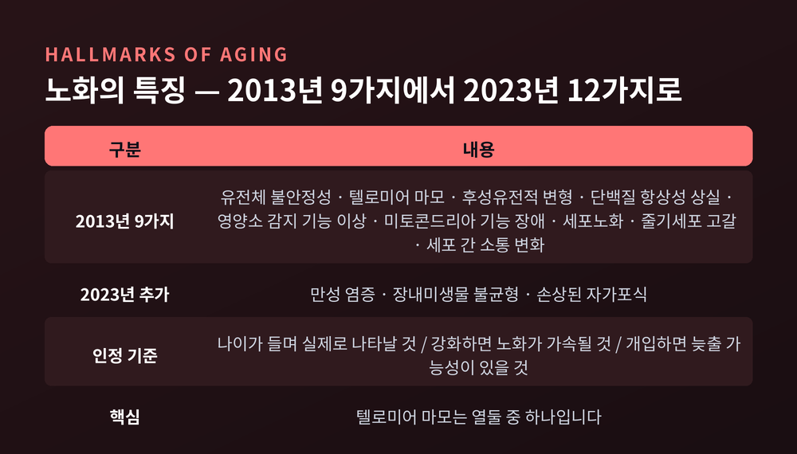
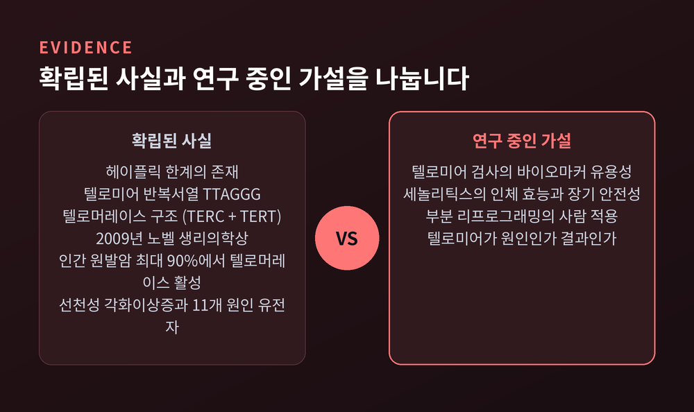
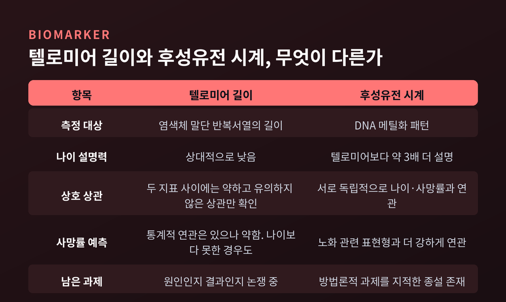

이번 글에서는 노화의 생물학을 세포 단위에서 정리해 보겠습니다. 특히 텔로미어가 실제로 무엇을 말해주고, 무엇을 말해주지 못하는지를 나누어 보려 합니다. 참고로 이 글은 정보 정리이지 의학적 조언이 아닙니다.
먼저 결론부터 세 줄로 적습니다.
1961년 이전까지 생물학의 통념은 이랬습니다. "세포는 배양 조건만 맞으면 영원히 산다."
레너드 헤이플릭이 이 통념을 뒤집었습니다. 그는 위스타 연구소에서 폴 무어헤드와 함께 사람의 배아 폐 섬유아세포를 계속 옮겨 심으며 관찰했습니다. 결과는 뜻밖이었습니다. 세포는 약 50회 정도 집단배가를 하고 나면 분열을 멈췄습니다. 통상 인용되는 범위는 40~60회입니다.
중요한 대목은 그다음입니다. 분열을 멈춘 세포는 죽지 않았습니다. 대사는 계속했습니다. 다만 더 이상 나뉘지 않았습니다. 이 상태를 복제노화라고 부릅니다.
의심의 여지를 없앤 실험이 하나 있습니다. 헤이플릭과 무어헤드는 40회 분열한 남성 세포와 10회 분열한 여성 세포를 같은 수로 섞어 배양했습니다. 남성 대조군이 분열을 멈출 무렵 혼합 배양을 들여다보니, 여성 세포만 남아 있었습니다. 배양 실수도, 오염도 아니었던 셈입니다. 분열 한계는 세포 안에 이미 새겨져 있었습니다.

다만 한계도 분명히 해두겠습니다. 헤이플릭 한계는 배양 접시 안에서 관찰된 현상입니다. 모든 세포에 똑같이 적용되지는 않습니다. 사람의 폐 상피세포가 텔로미어 유지 기전 없이 200회 넘게 분열했다는 보고도 있습니다.
그 '세포 안에 새겨진 계수기'의 정체가 텔로미어입니다.
텔로미어는 염색체 맨 끝에 붙어 있는 반복 DNA입니다. 사람을 포함한 고등생물에서 반복 단위는 TTAGGG 여섯 글자입니다. 이 서열이 염색체 끝을 감싸 손상과 정보 손실을 막고, 염색체끼리 엉겨 붙는 일을 막습니다. 신발끈 끝의 플라스틱 캡에 자주 비유됩니다.
문제는 복제 방식에 있습니다. DNA 중합효소는 딸가닥의 염색체 맨 끝을 끝까지 합성하지 못합니다. 이를 말단 복제 문제라고 부릅니다. 그래서 분열할 때마다 끝이 조금씩 깎여 나갑니다.
숫자로 보면 이렇습니다. 사람의 텔로미어는 태어날 때 대략 10~15킬로베이스입니다. 개인차가 큽니다. 그리고 세포가 한 번 나뉠 때마다 대략 50~200염기쌍이 사라집니다. 자료에 따라 50~100염기쌍으로 보고되기도 합니다. 세포 종류와 측정법이 다르기 때문입니다.

텔로미어가 임계 길이 아래로 짧아지면 세포는 그것을 DNA 손상 신호로 읽습니다. 그리고 분열을 멈춥니다. 더 진행되면 염색체 끝끼리 융합이 일어납니다.
덧붙이면, 최근 그림은 더 복잡해졌습니다. 2024년 사이언스 논문은 사람의 텔로미어 길이가 염색체 말단별로 고유하며 개인 간에 보존된다고 보고했습니다. '텔로미어 평균 길이 하나'로 요약하는 방식이 거친 접근이라는 뜻입니다.
그렇다면 정자와 난자는 왜 세대를 넘어 짧아지지 않을까요. 답은 효소에 있습니다.
2009년 노벨 생리의학상은 엘리자베스 블랙번, 캐럴 그라이더, 잭 쇼스택에게 돌아갔습니다. 수상 사유는 "염색체가 텔로미어와 텔로머레이스 효소에 의해 어떻게 보호되는지를 발견한 공로"였습니다.
블랙번과 쇼스택은 짚신벌레류인 테트라히메나의 염색체 말단 서열을 효모 염색체에 붙였습니다. 그러자 효모 염색체가 온전히 유지됐습니다. 텔로미어 서열이 염색체를 지킨다는 첫 증명이었습니다. 이어 그라이더와 블랙번이 텔로미어를 실제로 늘리는 효소를 찾아냈습니다.
텔로머레이스는 역전사효소입니다. 부품은 크게 둘입니다. 주형 역할을 하는 RNA(TERC)와 촉매를 담당하는 역전사효소(TERT)입니다. 자기 안에 든 RNA 주형을 읽어 염색체 끝에 TTAGGG를 새로 붙입니다. 자를 들고 다니는 목수인 셈입니다.
이 효소를 켜두는 세포는 정해져 있습니다. 생식세포와 일부 줄기세포입니다. 반면 분화를 마친 대부분의 체세포에서는 TERT 유전자가 전사 단계에서 억제되어 있습니다. 스위치가 꺼진 상태로 평생을 보냅니다.
이 지점에서 많은 분들이 같은 질문을 하십니다. 답은 간단하지 않습니다.
인간 원발암의 최대 90%에서 TERT 발현 또는 텔로머레이스 활성이 검출됩니다. 텔로머레이스 활성화는 텔로미어 길이를 안정시켜 노화라는 장벽 자체를 지워버립니다. 체세포에 TERT를 강제로 발현시키면 복제노화를 넘어서고, 악성 전환에 기여한다는 것이 실험으로 확인됐습니다.
즉 텔로머레이스를 켜는 일은 노화 억제 장치를 끄는 일이기도 합니다. 세포노화는 원래 종양을 막는 안전장치입니다.
반대 방향의 증거도 있습니다. 선천성 각화이상증이라는 유전 질환은 텔로미어 유지가 충분하지 않아 텔로미어가 임계 수준까지 짧아지는 병입니다. 피부 색소침착 이상, 손발톱 이형성, 백반증의 세 징후에 골수부전과 폐섬유증, 암 소인이 따라옵니다. 원인은 DKC1, TERT, TERC, TINF2를 비롯한 열한 개 텔로미어 관련 유전자의 변이로 확인됐습니다.
텔로머레이스가 지나치면 암, 모자라면 조기 노화 유사 증상. 이 좁은 균형 위에 우리 몸이 서 있습니다.
여기서 시야를 넓히겠습니다.
2013년 카를로스 로페스-오틴 연구진이 학술지 셀에 노화의 특징 아홉 가지를 정리했습니다. 그리고 2023년, 같은 그룹이 "Hallmarks of aging: An expanding universe"를 통해 세 가지를 추가했습니다. 이제 열두 가지입니다.
추가된 셋은 장내미생물 불균형, 만성 염증, 손상된 자가포식(대autophagy)입니다. 기존의 아홉은 유전체 불안정성, 텔로미어 마모, 후성유전적 변형, 단백질 항상성 상실, 영양소 감지 기능 이상, 미토콘드리아 기능 장애, 세포노화, 줄기세포 고갈, 세포 간 소통 변화입니다.

어떤 현상이 '특징'으로 인정받으려면 세 가지 기준을 통과해야 합니다. 나이가 들면서 실제로 나타날 것. 실험적으로 강화하면 노화가 빨라질 것. 개입하면 늦추거나 멈추거나 되돌릴 가능성이 있을 것.
목록을 다시 보시면 아실 겁니다. 텔로미어 마모는 열둘 중 하나입니다. 노화를 텔로미어로 환원하는 설명은, 열두 조각 퍼즐에서 한 조각만 들고 그림을 말하는 일에 가깝습니다.
분열을 멈춘 노화세포는 조용히 있지 않습니다. 염증성 단백질을 계속 뿜어냅니다. 이를 노화 관련 분비 표현형, 줄여서 SASP라고 부릅니다. 이 분비물이 주변 조직에 염증을 퍼뜨리고 노화를 가속한다고 봅니다.
젊을 때 이 장치는 우리를 지킵니다. 손상된 세포가 계속 분열하는 걸 막으니까요. 그런데 나이가 들어 노화세포가 쌓이면, 같은 장치가 조직 기능 장애의 원인이 됩니다.
그래서 노화세포를 골라 없애는 약, 즉 세놀리틱스 연구가 이어지고 있습니다. 다사티닙과 쿼세틴 병용, 피세틴, 나비토클락스 등이 후보입니다. 죽이지 않고 분비만 억제하는 세노모픽스 접근도 있습니다.
초기 인체 연구도 나왔습니다. 당뇨병성 신장질환 환자 대상 파일럿에서 11일 치료 안에 노화세포 부담이 측정 가능한 수준으로 줄었다는 예비 보고가 있었습니다. 2025년에는 고령자 40명 대상 피세틴 시험에서 순환 노화세포와 SASP 인자 감소, 신체기능 점수 개선이 보고됐습니다. 초기 알츠하이머병과 특발성 폐섬유증 대상 시험도 진행 중입니다.
다만 이 대목은 조심스럽게 읽어야 합니다. 시험 규모가 수십 명 단위이고 파일럿·공개라벨 위주입니다. 그리고 종설들은 같은 경고를 반복합니다. 사람에게서 노화세포를 오래 제거했을 때 무슨 일이 생기는지는 알려져 있지 않습니다. 상처 치유 저해, 면역 기능 이상, 종양 발생 위험 증가 가능성이 지적됩니다. 잘 통제된 임상시험이 더 필요하며, 현시점에서 광범위한 적용은 권고될 수 없다는 것이 학계의 정리입니다.

이제 처음 질문으로 돌아가겠습니다. 텔로미어는 무엇을 말해주나.
학계의 평가는 시중 마케팅과 상당히 다릅니다.
종설들은 이렇게 정리합니다. 텔로미어 길이 자체로는 노화 속도의 대략적 추정만 가능하며, 노화 관련 질환이나 사망률의 임상적으로 중요한 위험 지표로 보기 어렵습니다. 단일 바이오마커로서 통상적 기준을 충분히 만족하지 못합니다. 백혈구 텔로미어 길이는 사망률과 통계적으로 구분 가능한 연관을 보이긴 했지만 약했고, 나이나 여러 자기보고 변수보다 생존을 잘 예측하지 못했습니다. 심장판막 시술 환자에서는 1년 사망률 예측에 부실한 바이오마커였다는 보고도 있습니다.
물론 반대 자료도 있습니다. 유년기 텔로미어 길이는 성인기나 노년기 측정치보다 예측력이 높습니다. 고령의 진행성 난소암 환자에서 텔로미어 길이가 예후 바이오마커였다는 다기관 연구도 있습니다. 어느 한쪽으로 정리된 상태가 아닙니다.
더 근본적인 쟁점은 따로 있습니다. 텔로미어 길이가 그저 몸 상태를 반영하는 '생물학적 온도계'인지, 아니면 실제로 노화 속도에 개입하는 원인인지. 이 논쟁은 아직 진행 중입니다.
비교 대상을 하나 놓으면 그림이 선명해집니다. 후성유전 시계입니다. DNA 메틸화 패턴을 읽는 방식으로, 스티브 호바스는 처음 전사체 기반으로 시작했다가 메틸화가 더 선명한 신호를 준다는 걸 발견하고 방향을 틀었습니다.

수치가 말해줍니다. 후성유전 시계는 텔로미어 길이보다 나이의 분산을 약 3배 더 설명합니다. 흥미로운 점은 둘이 서로 독립적이라는 것입니다. 후성유전 시계 추정치와 텔로미어 길이 사이에는 약하고 유의하지 않은 상관만 발견됐습니다. 70~90세 구간에서 두 지표는 서로 상관하지 않지만, 각각 독립적으로 연대기적 나이와 연관되고 둘 다 사망률의 예측인자였습니다.
덧붙이면 DNA 메틸화 시계 역시 완성품이 아닙니다. 방법론적 과제를 정리한 비판적 종설이 따로 나와 있습니다.
마지막 질문입니다. 세포 시계를 거꾸로 돌릴 수 있을까요.
부분 리프로그래밍이라는 접근이 있습니다. 야마나카 인자를 짧게 발현시키는 방법입니다. 후성유전적 회춘이 일어날 만큼은 길게, 그러나 세포가 유도만능줄기세포로 되돌아갈 만큼 길지는 않게. 정체성은 지킨 채 기능만 젊게 만든다는 구상입니다.
동물 실험 결과는 인상적입니다. 야마나카 인자의 단기 발현이 조기노화 마우스 모델의 수명을 종양 형성 없이 연장했습니다. 노령 야생형 마우스에서 대사질환과 근육손상 회복이 개선됐습니다. 노령 마우스 뇌의 신경발생 니치에서 신경모세포 비율이 회복되고 여러 노화의 분자적 표지가 되돌아갔다는 보고도 있습니다. 대뇌피질 뉴런만 대상으로 한 연구에서는 주기적으로 발현시켰을 때에만 인지기능이 뚜렷이 향상됐습니다.
여기까지가 좋은 소식입니다. 그리고 다음 줄이 중요합니다. 생체 내 리프로그래밍은 재생의학에서 유망하지만, 안전성과 임상 적용 가능성에 대한 우려가 계속 제기되고 있습니다. 사람 대상 시험은 이제 논의가 시작되는 단계입니다.
즉 지금 우리가 가진 것은 마우스의 데이터이지, 사람의 답이 아닙니다.
정리하면 이렇습니다.
세포는 헛되이 늙지 않습니다. 분열을 멈추는 것도, 텔로미어가 닳는 것도, 노화세포가 염증을 뿜는 것도 — 그 하나하나는 원래 우리를 암으로부터 지키려고 마련된 장치였습니다. 다만 그 장치가 오래 작동하다 보니 대가를 남겼을 뿐입니다.
그래서 노화 연구에서 가장 정직한 문장은 이것이라고 생각합니다.
"텔로미어는 노화의 시계가 아니라, 노화가 남긴 열두 개의 흔적 중 하나다."
텔로미어 길이를 재면 몇 살인지 알 수 있냐고 물으신다면, 아직은 아니라고 답하겠습니다. 다만 그 짧아진 끝자락이 어떤 이야기를 품고 있는지는, 이제 우리도 조금 읽을 수 있게 되었습니다.